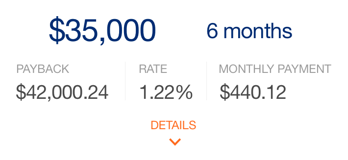
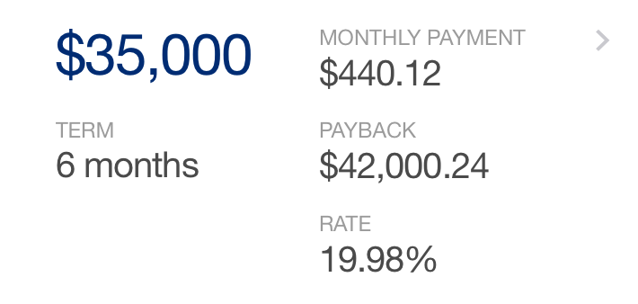
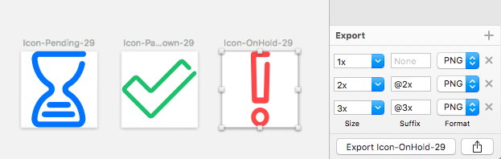

When OnDeck’s customers have successfully paid down a specific amount on their loan, they are eligible to "renew" and receive a completely new loan. The funds from that new loan would be used to pay off their remaining balance and the rest deposited into their bank account. Easy, right?
OnDeck’s mobile app currently shows when a customer is eligible, but to apply for that renewal loan, the customer must call the sales team - they are not able to do it on the app.
How do we present the complex information required and ensure the user fully understands their loan amount, terms and amount deposited into their bank account? Now do all of that while staying on brand, considering the rest of the user flows across the loan experience, and making it consistent for iOS and Android devices.
Fortunately, the renewal experience already exists for desktop, so I had a good jumping off point. I worked with the product owner to create medium fidelity wireframes and ensure we had all interactions accounted for.
One of the biggest challenges is explaining to users that their NEW loan is first used to pay off their EXISTING loan, then the balance is deposited into their bank account. User feedback from the desktop revealed that customers were definitely confused at the process. As an example, there are untold stories of customers calling in a panic about them having been approved for a $60,000 renewal loan, but only $42,000 was put into their account.
Recently OnDeck had been partnering with a third party to offer their lending solutions and I worked with the team to create a solution to combat this issue there. Some of the findings were used for this scenario.
Customers eligible for loan renewals already, logically, have their personal and business information saved in the system. We’re using that to pre-populate the fields, with the exception of their personal, estimated gross annual revenue. This data point is required for all types of applications and must be entered by the user per legal and compliance.
Incorporating the "Out of Wallet" questions from third party partner IDology, OnDeck is able to verify the identity of the user by asking personal questions as supplied from their API.
And with the bank information saved from the user’s profile, all we needed to do was allow them to select if they wanted an ACH or Wire transfer. User research tells us the preferred method is ACH, so that is pre-selected for convenience.
The most rounds of iterations went into the visual design of the decision and offers screens. Early drafts were wireframed out, then I created several design iterations for feedback from the team.
With some of those deemed off brand, or not exciting enough, I designed a version which took elements of our current app.
But now, how to display the offers? I tried several approaches. Some looked good when a single offer was displayed, but then when multiple offers were showing, it was too distracting visually.
Finally, we settled on this design. Hooray!


With many elements of design now established, creating the contracts pages should have been a breeze. The user reviews all their loan details, reads the lengthy legal text, then selects "Agree and Fund," right? Not so simple. The legal team required us to disable the button until the user had opened the Business Loan & Security Agreement and manually selected "Agree" to that, too.
There was push back from product and UX; generating extra steps for the user is not the preferred method, this adds another technical challenge for the dev team, and this is not a requirement for new loans. In the end, the decision stood, but we were able to incorporate iOS and Android native select boxes and toggles.
Then there were the interstitials. While the user’s application was processing, what would we show to them? Of this too, I made several iterations, here are a few.
Technologically, the app would send over the user's details, then over the first 11 seconds, check every 300MS for a reply. Afterwards, it would check every 5 seconds up to one minute before timing out.
Initially the product requirements were to generate a determinate progress bar, but not being positive of when the reply would return, the dev team would have to force completion before delivering the user to the decision screen. The Product Owner, certain they were up for the task, asked me to mock up an animation.
As the dev team was building up the designs and prototype, feedback was coming in. The offers screens looked great on larger iPhone and Android devices, but the numbers were squeezed on iPhone 4. I created an alternative version.
After stringing together a clickable prototype on InvisionApp, I generated questions for user testing and worked with the Product Owner and User Researcher to test on UserTesting.com. The questions we were looking to understand:
After six user tests, the results showed that all users thought the renewal process itself was easy to complete (one user had issue with the task wording, but still completed the application itself easily). The majority of users bypassed the other offers pursuing the call to action to click the first shown option.
On the term details page, users with larger phones did not view the loan details box, as it looked like everything was visible. Regarding editing fields, only one user explicitly mentioned them. She mentioned that she did like the way the information was clearly laid out.
The recommended actions were to: show all offers by default and have an indication that there is more content below the break on the "Term Details" page. This was done by removing the sticky "Continue" button forcing the user to scroll down and see the table.
While I was designing this new experience, there was a simultaneous rebrand happening across the company, which is why you may see different logos and colors on some of the mockups.
The product team requested this feature and the app launch at the same time as the new public site and rebrand, so I worked with the developers to supply assets, creating new icons and updating content and elements to be on brand. Dozens of new icons were created for iOS and Android.
After four sprints, the design was completed and uploaded to Zeplin, where the developers were able to find presentation specs and download SVGs if they needed. You can see the updated app in the iTunes store and on Google Play.
Thanks for reading!